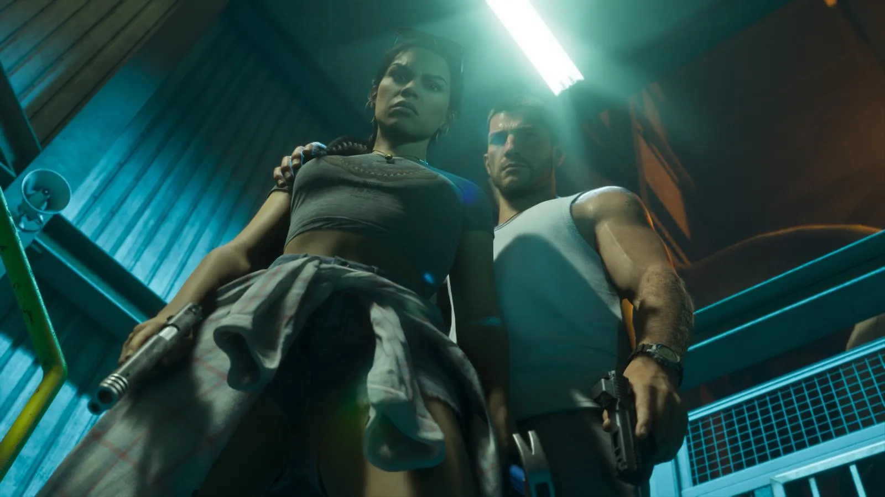

Child’s Play: прохождение миссии GTA 6
Опубликовано:

- Похитители держат сына Андреса Рафу, а денег на выкуп нет. Джейсон с Андресом тянут время на обмене у цементного завода к югу от аэропорта VCIA, Лусия тихо пробирается к пленнику. Потом Густаво предаёт всех — и начинается погоня на машине, мотоцикле и вдоль железной дороги.
- Глава 4, миссия 17 из 26. Играем за: Джейсон и Лусия.
- Награда: $30 000 и трофей Family Matters.
Миссия коротко
| Глава | 4. Vice City, Baby |
| Номер в сюжете | 17 |
| Играем за | Джейсон и Лусия |
| Кто даёт | Андрес |
| Где начинается | Вайс-Сити, Downtown — штаб Megamundo |
| Условие | после Fresh Evidence; на карте у миссии таймер |
| Награда | $30 000 и трофей Family Matters |
| Переиграть | нельзя — сохраняйтесь вручную |
Где начинается
Прохождение по шагам
- Езжайте в карьер к югу от аэропорта VCIA и проезжайте пост у въезда к месту сделки — Лусия выйдет из машины.
- Лусией осмотрите карьер в бинокль: Рафа на верхнем этаже здания с красными огнями. Пока смотрите, отмечайте охрану.
- Тихо доберитесь до комнаты Рафы: держитесь правой стороны, по лестнице и ступенькам наверх, в левую дверь — охранника снимите пистолетом с глушителем.
- Джейсоном зачистите группу перед зданием и отходите к машинам; по подсказке переключитесь на Лусию.
- Ведите Рафу по мосткам к лестнице. Если вас схватят — быстро жмите □ (X), затем стреляйте в того, кто держит мальчика.
- Догоните погрузчик Рафы, посадите его в машину и доведите до Густаво у двери.
- Гонитесь за Густаво: Джейсон за рулём, Лусия стреляет. Когда машина перевернётся — выходите и прикройте Андреса.
- Садитесь на мотоцикл — Лусия сзади отстреливает бойцов в грузовике и экипаж вертолёта.
- У внедорожника на путях жмите R2 (RT), чтобы разрезать ремень, крутите левый стик и нажмите ○ (B), чтобы вытащить Рафу.
- Догоните Густаво до шоссе и сбейте его с ног — миссия завершится.
Советы
- Для тихой части берите пистолет с глушителем — так Лусию не заметят.
- Пока Лусия несёт Рафу, она хуже целится — сначала расчистите путь.
- В погоне с грузовиком позиция Лусии сзади на мотоцикле удобнее, чем стрельба из машины.
Подробности и секреты
- Таймер на карте ненастоящий: миссию просто обязательно пройти до Power Play, раньше или позже — на сюжет не влияет (GTABase, gta6bugs, theclick).
- Комнату Рафы ищите в бинокль: верхний этаж, под рядом красных огней. Врагов при этом можно пометить (egamers, gta6bugs).
- Путь Лусии: держитесь правой стороны, лестница на металлической конструкции, ступени до этажа Рафы и дверь слева. Двое охранников стоят на углу мостков, третий — внутри (egamers, hintclue).
- Если Лусию схватят, быстро жмите кнопку, чтобы вырваться, и стреляйте в того, кто держит Рафу (GTABase, gta6bugs, hintclue).
- Отдать Рафу Густаво нужно обязательно, хотя он сразу предаст — это часть сюжета (theclick, PowerPyx).
- Награда — $30 000 и трофей Family Matters (PowerPyx, egamers, Outputlag).
Что можно пропустить
Миссия ограничена по времени (таймер на карте). Если остальные задания Джейсона и Лусии уже пройдены, игра запустит её сама перед Power Play. Пройти её раньше можно — на сюжет это не влияет.
Частые вопросы
Сколько платят за Child’s Play?
$30 000, плюс трофей Family Matters.
Где держат Рафу в Child’s Play?
В карьере к югу от аэропорта VCIA, на верхнем этаже здания с красными огнями.
Как вытащить Рафу из машины на путях?
Жмите R2 (RT), чтобы разрезать ремень, крутите левый стик, затем нажмите ○ (B).
Есть ли таймер в Child’s Play?
Нет. Метка на карте похожа на таймер, но миссию просто нужно пройти до Power Play.
Где Рафа в Child’s Play?
На верхнем этаже здания цементного завода, в комнате под рядом красных огней — видно в бинокль.
Источники: PowerPyx, «GTA 6 Child’s Play (Rescue Rafa from Kidnappers) Walkthrough», 18–19.11.2026; Game8, PowerPyx, GTABase, Sportskeeda, egamers, Outputlag, gta6data, hintclue, gta6bugs, theclick — Child’s Play, 22–28.11.2026. Кнопки указаны для PS5, в скобках — Xbox. Названия миссий — как в английской версии игры.